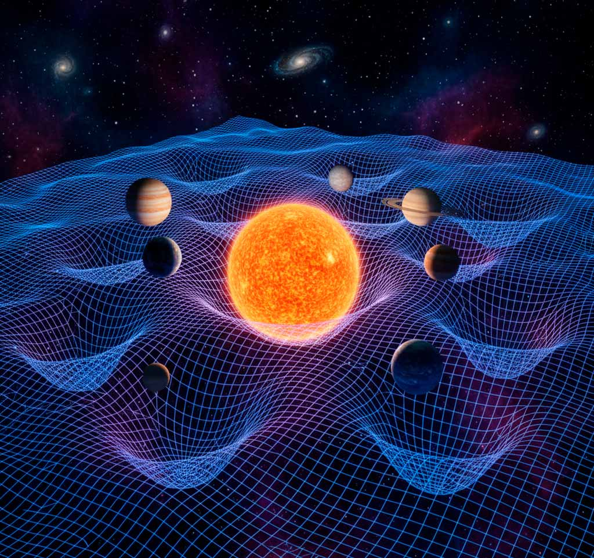

Si los átomos son los ladrillos de la materia, las partículas elementales son las letras del alfabeto cósmico. Con ellas se escribe todo lo que existe. Y, como en un zoológico, encontramos especies variadas: algunas familiares y estables, otras exóticas y fugaces.
Los protagonistas más conocidos son los quarks y los leptones . Los quarks se combinan de tres en tres para formar protones y neutrones, que a su vez componen los núcleos atómicos. Existen seis tipos distintos de quarks con nombres curiosos: arriba, abajo, extraño, encanto, cima y fondo. Aunque jamás se observan aislados, su danza interna mantiene la coherencia de toda la materia visible.
Los leptones, por su parte, incluyen al electrón , compañero inseparable de los átomos. Sin él, no habría química ni vida. Pero hay más: el muón y el tau, partículas más pesadas y efímeras, y los misteriosos neutrinos , que atraviesan la Tierra en cantidades inimaginables cada segundo, casi sin dejar rastro. Somos atravesados por ellos constantemente, como si fuéramos transparentes a su mirada.
A este zoológico se suman las partículas mensajeras , portadoras de las fuerzas fundamentales. El fotón transmite la luz y la interacción electromagnética; los gluones mantienen unidos a los quarks dentro de protones y neutrones; los bosones W y Z median la interacción débil, responsable de procesos como la radiactividad; y el recién descubierto bosón de Higgs otorga masa a las demás partículas. En conjunto, forman lo que llamamos el Modelo Estándar , la gran tabla periódica de lo invisible.
Lo asombroso es que este universo de partículas no es una construcción abstracta: podemos detectarlo en aceleradores como el CERN, donde haces de protones chocan a velocidades cercanas a la luz. En cada colisión, surgen destellos de partículas exóticas que existen apenas una fracción de segundo, pero nos revelan capítulos ocultos de la naturaleza.
Mirar este zoológico subatómico es como asomarse a la raíz misma de la realidad. Los ladrillos de la materia no son bloques rígidos, sino vibraciones, probabilidades, entidades que a veces se comportan como partículas y otras como ondas. El universo, visto en esta escala, se parece más a una sinfonía de energías que a una máquina de engranajes.
Todavía nos falta comprender la pieza más grande del rompecabezas: la fuerza de la gravedad, que no encaja del todo en este modelo. Quizá allí, en esa frontera, se encuentre la clave de una física aún más profunda.
